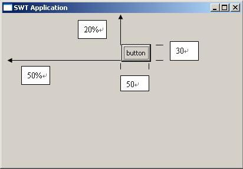

自定义布局管理器-FormLayout
在java.awt包与javax.swing包下有许多现成的布局类，比如BorderLayout、FlowLayout，还有较为复杂的、用于精确定位的布局类GridBagLayout、SpringLayout等。起初我刚刚从事gooey时（06年中），企图依靠JDK自带的布局类进行布局，但是实际不可能或者说很难做到。对于复杂的GridBagLayout、SpringLayout来说又望而生畏，而且使用GridBagLayout、SpringLayout来完成布局的话工作量相当可观，因此当时放弃了布局管理器，采用ComponentListener等尺寸监听事件来布局组件。虽然这种做法没有工具支持、采用手工coding，但是自由度上升了很多，而且熟悉了以后编码效率也大幅其高。与此同时，我开始接触SWT，发现org.eclipse.swt.layout.FormLayout布局很强大、用起来爱不释手、要多好有多好、要多强有多强......。于是当时我的布局组件的方式采用ComponentListener监听与FormLayout结合的方式，也是在同期，我领悟到了九宫图这种专业布局，因此之后九宫图的实现也都采用上述两种方法。随着对SWT的不断了解外加IM软件界面的专业性，我发现SWT并不非常适合做专业外观，也因为此我逐渐将精力转向Swing。
在介绍如何编写自定义布局管理器前，我想先把SWT体系下的FormLayout布局特点做个简要介绍。 http://image.it168.com/cms/2007-11-26/Image/2007112610641.jpg
SWT体系下的FormLayout是非常灵活、精确的布局，FormLayout布局组件的特点是采用百分比+偏移量的方式。前者可以应付容器尺寸变化时内部组件跟着调整；后者以应付精确的布局。这一特征是通过org.eclipse.swt.layout.FormData和org.eclipse.swt.layout.FormAttachment两个类来实现。
1、FormAttachment类的用法
FormAttachment是在FormData之下，更进一步地布局数据类。
下面给出一段示例程序
shell.setLayout(new FormLayout());
final Button button = new Button(shell, SWT.NONE);
button.setText("button");
final FormData formData = new FormData();
formData.top = new FormAttachment(20, 0);
formData.left = new FormAttachment(50, 0);
formData.bottom = new FormAttachment(20, 30);
formData.right = new FormAttachment(50, 50);
button.setLayoutData(formData);

通常使用FormLayout来定位一个组件要确定4个FormAttachment对象：top、bottom、left、right，而且通常是使用FormAttachment(int numerator,int offset)这个构造器，也就是百分比+偏移量。当然FormAttachment不只这一种，但是都是可选的，如果想深入研究FormLayout可以参阅SWT相关的介绍。
FormLayout很强大、灵活，但是AWT、Swing包中却没有，但是不等于说不能实现，学习了上文之后当然可以自定义一个，SWT有的AWT同样也可以拥有。
SWT中使用FormLayout还要结合FormData与FormAttachment。下面给出这两个类的实现
你应该了解坐标系的概念，Java中的坐标系以向右、向下为正方向。因此对于offset，正值是向右、向下偏移；负值是向左、向上偏移。与SWT的FormAttachment稍有不同的是，我自定义的构造器第一个参数是float类型，它代表的意思与“FormAttachment(int numerator,int offset)”相同，都是表示百分比，只不过前者用整数表示，后者用小数表示。例如SWT中“new FormAttachment(20,0);”用后者表示就是“new FormAttachment(0.2f,0);”。
在FormLayout布局中，定位一个组件需要最多4个FormAttachment对象，但是可以不必全部指定，稍后可以看到缺省的行为。
如果你的布局管理器比较简单，可以实现LayoutManager接口。但是正如上文所述，LayoutManager的addLayoutComponent(String name, Component comp)方法是必须通过java.awt.Container类的“Component add(String name, Component comp)”方法触发调用，其中的字符串参数指定了布局信息。但是字符串表达方式很有限，因此应当采用LayoutManager2接口，这样，addLayoutComponent(Component comp, Object constraints)方法被调用时，“Object constraints”可以是任何类型的对象，很方便。下面逐步实现这个类。
首先搭建的原型如下
再声明一个保存组件与布局信息对应关系的映射：private Map<Component, FormData> componentMap;
同时在构造器中赋值
public FormLayout() {
componentMap = new HashMap<Component, FormData>();
}
接着完成addLayoutComponent方法的实现。在完成编写之前我们看一下怎样去使用FormLayout以做到心中有数。下面的一段代码是调用FormLayout示例：
如上所示，当调用“getContentPane().add(button,formData);”时，布局类的 public void addLayoutComponent(Component comp, Object constraints)方法便会调用，constraints参数就是FormData对象。所以在addLayoutComponent方法中需要做的就是把组件与布局信息关联起来。下面是完整实现：
前面的合法性检查是必需的，为什么都明白。然后比较重要的就是“synchronized (comp.getTreeLock()) ”，这是保障在多线程的环境下能安全执行，如果你察看JDK源码布局类的实现，会发现这个同步多次用到，我这么用也是参考JDK的实现。关于getTreeLock的实现在JDK6.0源码中是这样实现的。
还要注意的是传入的FormData实例的left、top FormAttachment必须要给出，因为这两个FormAttachment代表的是Location（位置）信息，因此必须指定。对于right、bottom可以不指定，但是如果不指定的话，必须能从getPreferredSize()中得到信息，否则组件的尺寸将无法确定。
对于addLayoutComponent(String name, Component comp)方法，由于通过查看源码发现“实现了LayoutManager2 接口的布局类该方法永远不会被调用”（未来的JDK版本如何实现不能保证），所以该方法空实现，并在注视上作@deprecated标记。
/**
* @deprecated
*/
public void addLayoutComponent(String name, Component comp) {
}
除了layoutContainer方法，其余方法均很简单。一并给出：
public float getLayoutAlignmentX(Container target) {
return 0;
}
public float getLayoutAlignmentY(Container target) {
return 0;
}
public void invalidateLayout(Container target) {
synchronized (target.getTreeLock()) {
componentMap.clear();
}
}
public Dimension maximumLayoutSize(Container target) {
return target.getMaximumSize();
}
public Dimension minimumLayoutSize(Container target) {
return target.getMinimumSize();
}
public Dimension preferredLayoutSize(Container target) {
return target.getPreferredSize();
}
public void removeLayoutComponent(Component comp) {
synchronized (comp.getTreeLock()) {
componentMap.remove(comp);
}
}
根据上文所述，这些方法不难理解。其实对于FormLayout来说，...LayoutSize(Container target)、getLayoutAlignmentX等方法不是很重要。重要的是public void layoutContainer(Container target)的实现，也是所有布局类最重要的一个类。
首先该方法的第一步也要套上 synchronized (target.getTreeLock()) {}，接下来是：
int w = target.getWidth();
int h = target.getHeight();
Component[] components = target.getComponents();
for (Component component : components) {
}
不难理解，是要首先获取容器的长、高，然后遍历容器内的所有组件逐一进行布局。下面的工作就是在for循环体中做文章了。
FormData formData = componentMap.get(component);
if (formData == null) {
continue;
}
因为在addLayoutComponent(Component comp, Object constraints)方法中已经关联了组件与布局信息，所以可以通过componentMap.get(component)这一行得到组件的布局信息，加上空值判断确保代码万无一失。
接下来取出4个FormAttachment对象。
FormAttachment left = formData.left;
FormAttachment right = formData.right;
FormAttachment top = formData.top;
FormAttachment bottom = formData.bottom;
然后计算Location信息，x、y：
int x = (int) (left.percentage * w) + left.offset;
int y = (int) (top.percentage * h) + top.offset;
计算方法就是FormLayout的布局方式：(百分比*容器尺寸)+偏移量。
然后计算组件的长、高，width、height：
int width = 0;
int height = 0;
if (right == null || bottom == null) {
Dimension size = component.getPreferredSize();
if (size == null) {
throw new RuntimeException(
"if right FormAttachment or bottom FormAttachment is null,the component must have preferred-size");
} else {
width = component.getPreferredSize().width;
height = component.getPreferredSize().height;
}
} else {
int x2 = (int) (right.percentage * w) + right.offset;
int y2 = (int) (bottom.percentage * h) + bottom.offset;
width = x2 - x;
height = y2 - y;
}
component.setBounds(x, y, width, height);
计算时根据给出right与bottom布局分为两种情况，如果未给出，那么根据组件的getPreferredSize方法得到组件的最佳大小，然后以这个大小决定组件的尺寸。作为规范，布局类布局组件不是调用组件的getSize而是调用get...Size来决定组件的尺寸，所有布局管理器也都是这么实现的。所以如果你为组件setSize()企图希望再布局管理器中生效是不可能的，所以你应该视图调用组件的setPreferredSize方法。如果right和bottom都不是null，那么计算组件尺寸将忽略getPreferredSize，方法与Location一样，只不过对于尺寸的获取要两个坐标相减。最后调用组件的setBounds进行最终定位，可见对于布局管理器，其布局原理与使用绝对布局一样，调用setBounds实现，没什么特别之处。只不过是把布局单独抽出成一个类来实现罢了。
作为FormLayout需要补充的是，在进行最终布局“component.setBounds(x, y, width, height);”之前，未进行逻辑判断，所以x、y可能会超出了容器的范围而width、height也可能是负值，这都会导致组件“莫名其妙”地不可见，这都不是布局管理器的问题。例如以下两行代码：
formData.left = new FormAttachment(0.5f, 30);
formData.right = new FormAttachment(0.5f, 20);
就会使组件永远不能显示，因为对于left的定位，是位于容器50%处向右30像素处，而right是位于容器50%处向右20像素处，这样组件的长度就是-10，怎么能显示出来呢？
FormLayout就介绍到这里，因为发帖只能在周末，加上最近一段时间还有别的事，能挤出一点时间真不容易。请关注下一篇CenterLayout的实现。